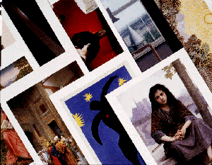

Postcard List

Quality postcard reproductions of objects in the collections of The
Minneapolis Institute of Arts.
African
- Bronze Leopard, Nigeria (Benin)
- Triple-faced mask, Ivory Coast, Ligbe
- Mask (Mwana Pwo), Zaire/Angola, Chokwe people
- Nail figure (n'kisi nkondi), Zaire, Kongo people
- Yet Belt, Zaire, Kuba people
- King's Crown, Nigeria, Yoruba
- Man and Woman with Calabash, Nigeria, Yoruba, Efon-Aloye area
- Duen Fobara (memorial screen)Nigerian, Ijo, Abonnema Village
- Standing Figure, Zaire, Songye
- Equestrian Figure, Mali
- Sande Society mask, Sierra Leone, Mende
Americas
- Jaguar Effigy, Nicoya Peninsula, Costa Rican
- Guard with Spear, Nayarit-Jalisco Border, Mexican
- Seated Ball Player, Nayarit, Mexican
- Ceremonial ball game yoke, Veracruz, Mexican
- Ear Spools with religious figure and attendants, Peru
- Bridge-spout Vessel in the form of a fish, Peru, Nazca
- House Group, Nayarit, Mexican
- Mask, Eskimo/American
- Ceramic jar, Acoma, New Mexican
- Effigy Pipe, Santee Sioux, North American
- Hide with Scenes of a Buffalo Hunt and a Sun Dance, Cadzi Cody, Shoshone
- Bandolier Bag, Ojibwe, Woodlands Region, American
- Nightshield, Robert Lee Penn, Brule Lakota, Omaha, American
- Ledger drawing (Big Cloud: conquest inside dwelling), Cheyenne, American
- Beaded Bag, Charles Chief Eagle, Oglala Lakota, American
- Star Pattern Quilt, Carla Running Horse, Brule lakota, American
- Painted Bison Robe (detail), Crow, American
- Prince Albert, Arthur Amiotte, Oglala Lakota, American
- Belt Buckle, Leo T. Arrowite, Lehmi Shoshone, American
- Effigy Pipe, Santee Sioux, American
- Transformation Mask, Richard Hunt, Canadian, Kwakiutl People
- Beaded Cape, Anishibe
Asian Art
- Yang-Shao Jar, China
- Butterfly vase, K'ang shi Period, China
- Blue Horse, T'ang Dynasty, China
- Hill Censer, Former Han Dynasty, China
- Owl-Shaped Ritual vessel, Shang Dynasty, China
- Model of a Watchtower, Han Dynasty, China
- Dragon Throne, China
- Tiger-shaped Pillow, Chin Dynasty, China
- Imperial Portrait of Prince Duo-lo (detail), Ch'ing Dynasty, China
- Jade Mountain, Ch'ing Dynasty, China
- Group of Court Musicians, China
- Manchu woman's semi-formal court vest, China
- Theatrical robe for a young woman, China
- Manchu woman's unofficial informal robe, China
- Taoist's Priest robe, China
- Manchu woman's semi-formal court robe (detail)
- Buddhist's Priest robe, China
- Sakai Hoitsu, "Poppies", Japan
- Jizo Bosatsu (detail), Kamakura period, Japan
- Shibata Zeshin, "Cucumbers", Japan
- Haniwa Horse, Kofun period, Japan
- Tagasode Screens (2), Momoyama period, Japan
- Tawaraya Sotatsu, "Album Leaf from the Isi Monogatari: Nobles
Viewing
- Nunobiki Waterfalls", early Edo period, Japan
- Pair of Nio Guardian Statues, Kamakura period, Japan
- Karaori (outer Noh robe), Japan
- Nuihaku (inner Noh robe), Japan
- General Firoz Khan, from Golkonda Court, India
- Stele of Vishnu, India
- Storage jar with dragon motif, Yi dynasty, Korea
- Sunkampaeng Dish, Thailand
- Enshrined Buddha, Burmese
- Panel of Wall Tiles Illustrating BAHRAM GUR AND FITNA, Persia
- Tibetan Yamantaka Mandala, Monks of the Gyuto Tantric University
Decorative Arts and Sculpture
- Standing Diety, Roman (Pompeii)
- Tankard, Norwegian
- Venus Figure, Paleolithic (probably La Mouthe, France)
- Red-Figure Volute Krater, attributed to Methyse Painter, Greek
- Hydria, Antimenes Painter, Greek
- Doryphoros (Spear Beareer), Roman
- Winged Genius, Mesopotamia, Assyria
- Male Torso, Greco-Roman
- Mummy Case and coffin of Lady Teshat, Egyptian
- Model Boat, Egyptian
- Bronzes, Luristan
- Master of the Passion Diptych, "Diptych with Scenes from the
Life of Christ", French
- Saint Catherine of Alexandria, Austria, Salzburg
- Antoine-Louis Barye, "Theseus Slaying a Centaur"
- Raffaelo Monti, "Veiled Lady"
- Wenzel Friedrich, "Horn Chair with Matching Stool"
- Vincenzo Coaci, "Inkstand representing the Quirinale Monument"
- H.D. Sommer, top of Center Table
- Hiram Powers, "portrait Bust of George Washington"
- William Hutton, "Two Handled Presentation Cup with Lid"
- Milk pan and Compote, possibly by New Geneva-Greensboro Glass Works
- Sofa, possibly from the shop of Charles-Honore Lannuier
- Jean-Antoine Lepin and Joseph Coteau, "Louis XVI Astronomical
Timepiece"
- Charles Henri Joseph Cordier, "Bust of a Nubian"
- Bertel Thorvaldsen, "Ganymede and the Eagle"
- Toilet box, South German, probably Augsburg
- Teacups with Scenes from "The Fox and the Stork", S vres,
French
- Pietra Dura Jewel Box (detail), Italian, Florence
- Writing Desk, Italian
- Pablo Picasso, "Baboon and Young"
- George Morrison, "Collage IX: Landscape"
- Paul Revere, "Templeman Tea Service"
- Presentation Tray (for James J. Hill), manufactured by Tiffany and
Co.
- Giovanni Battista Piranesi, "Side Table"
- The Tudor Room, Hingham Manor, Suffolk, England
- Room from the Joseph and William Russell House, Providence, Rhode
Island
- Wallpaper Depicting a Rural Village Festival (from the MacFarlane
Room),China
- The Connecticut Room, Foxon, Connecticut
- Richard Bresnahan "Bowl with bean straw ash glaze"
- Richard Bresnahan "Vase with sunflower seed hull ash glaze"
- Richard Bresnahan "Spice jars"
- Richard Bresnahan "Teapot"
- Marisol, "The Cocktail Party"
- Salvador Dali, "Aphrodesiac Telephone"
Oceania
- Standing Figure with Pan Pipes, Papua New Guinea, New Ireland
- Frieze decoration from a malagan ceremony, Melanesian, New Ireland
Paintings
- Fra Angelico, "Saint Benedict"
- Ludolph Backhuysen, "Fishing Vessels Offshore in a Heavy Sea"
- Balthus, "The Living Room"
- Jean-Frederic Bazille, "Self-Portrait"
- William Baziotes, "Red Landscape"
- Max Beckmann, "Blindman's Buff"
- George Bellows, "Mrs. T in Cream Silk, No. 2"
- Segna di Bonaventura, "Madonna and Child"
- Pierre Bonnard, "Dining Room in the Country"
- Adolphe-William Bouguereau, "Temptation"
- Adolphe-William Bouguereau, "Bohemienne"
- Paul Bril, "Landscape with Men Playing Golf"
- Gustave Caillebotte, "Reclining Nude"
- Canaletto, "View of the Grand Canal"
- Paul Cézanne, "Chestnut Trees at Jas de Bouffan"
- Jean-Baptiste-Siméon Chardin, "Attributes of the Arts"
- Nardo di Cione , "Standing Madonna with Child"
- Pieter Claesz, "Still Life"
- Chuck Close, "Frank"
- Jean Clouet, "Portrait of Charlotte of France"
- Charles Caryl Coleman, "The Bronze Horses of San Marco"
- Cima de Conegliano, "Madonna and Child"
- Jean-Baptiste-Camille Corot, "Landscape"
- Jean-Baptiste-Camille Corot, "Springtime of LIfe"
- Jean-Baptiste-Camille Corot, "Silenus"
- Gustave Courbet, "The Castle at Ornans"
- Gustave Courbet, "Deer in the Forest"
- Eanger Irving Couse, "Indian Painter"
- Lucas Cranach the Elder, "Portraits of Moritz and Anna Buchner"
- Jasper Francis Cropsey, "Catskill Mountain House"
- Salvador Dali, "Portrait of Juan de Parega, the Assistant to
Valézquez"
- Honore Daumier, "The Fugitives"
- Hilaire-Germain-Edgar Degas, "Mlle. Hortense Valpin on, Enfant"
- Robert Delaunay, "Church of Saint Severin"
- André Derain, "St. Paul's from the Thames"
- Gérard Dou, "A Hermit Praying"
- Anthony van Dyck, "The Betrayal of Christ"
- James Sidney Ensor, "L'Intrigue"
- Henri Fantin-Latour, "Roses"
- Alexis Jean Fournier, "Mill Pond at Minneapolis"
- Paul Gauguin "I Raro te Oviri (Under the Pandanus)"
- Paul Gauguin "Tahitian Landscape"
- Jean-Léon Gérôme, "The Carpet Merchant"
- Anne-Louis Girodet de Roucy-Trioson, "Portrait of Mlle. Lange
as Danae"
- Vincent van Gogh, "Olive Trees"
- Francisco de Goya, "Self-Portrait with Dr. Arrieta"
- Philip R. Goodwin, "A 'Bear' Chance"
- Jan van Goyen, "River Landscape"
- El Greco, "Christ Driving the Money Changers from the Temple"
- Guercino, "Erminia and the Shepherds"
- Grace Hartigan, "Billboard"
- Childe Hassam, "Isles of Shoals"
- Bartholomeus van der Helst, "Portrait of a Burgomaster, Jacobus
Trip"
- Meindert Hobbema, "Wooded Landscape with Water Mill"
- Gerrit van Honthorst, "Denial of St. Peter"
- Clementine Hunter, "The Wash"
- Franz Ittenbach, "Madonna and Child"
- John Wesley Jarvis, "Captain Samuel C. Reid"
- Wassily Kandinsky, "Study for Improvisation V"
- Ernst Ludwig Kirchner, "Modern Bohemia"
- Ernst Ludwig Kirchner, "Dresden: Schlossplatz"
- Ernst Ludwig Kirchner, "Dance Training"
- Paul Klee, "Howling Dog"
- D. Ridgeway Knight, "Girl by a Stream, Flanders"
- Robert Koehler, "Rainy Evening on Hennepin Avenue"
- Oskar Kokoschka, "Tower Bridge"
- Oskar Kokoschka, "The Duomo, Florence"
- Sir Edwin Landseer, "The Cat's Paw"
- Nicolas de Largillière, "Madame Aubry with her son Leonor"
- Fernand Léger, "Table and Fruit"
- Henri Lehman, "Portrait of Mme. Alphonse Karr"
- Henry Lewis, "Cheever's Mill"
- Maximilien Luce, "Notre Dame"
- René Magritte, "Les Promenades D'Euclid"
- Master of the Embroidered Foliage, "Madonna and Child in a Landscape"
- Master of the St. Lucy Legend, "Pieta with Saints John the Baptist
and Catherine of Alexandria"
- Henri Matisse, "Three Bathers"
- Henri Matisse, "White Plumes"
- Henri Matisse, "Boy with a Butterfly Net"
- Abraham Mignon, "Still Life with Fruits, Foliage, and Insects"
- Sir John Everett Millais, "Peace Concluded"
- Jean François Millet, "Normandy Pasture"
- Joan Miró, "Spanish Playing Cards"
- Joan Miró, "Head of Woman"
- Piet Mondrian, "Composition with Red, Yellow, and Blue"
- Claude Monet, "Still Life with Pheasants and Plovers"
- Claude Monet, "Grainstack, Sun in the Mist"
- Claude Monet, "Nymph as: Pont Japonais"
- Luis de Morales, "Man of Sorrows"
- Paulus Moreelse, "Portrait of Catharina van Voorst"
- Paulus Moreelse, "Portrait of Lucas van Voorst"
- Edvard Munch, "Jealousy"
- Bartolomé Estebán Murillo, "Penitent Magdalene"
- Georgia O'Keeffe, "City Night"
- Georgia O'Keeffe, "Pedernal from the Ranch No. 1"
- Maxfield Parrish, "Dream Castle in the Sky"
- John F. Peto, "Reminiscences of 1865"
- Pablo Picasso, "Woman in an Armchair"
- Camille Pissarro, "Place du Theatre Francais, Rain"
- Nicolas Poussin, "Death of Germanicus"
- Maurice Prendergast, "Holidays"
- Pierre Paul Prud'hon, "L'union de l'Amour et de l'AMiti "
- Rembrandt van Rijn, "Lucretia"
- Pierre Auguste Renoir, "Piazza San Marco"
- Sir Joshua Reynolds, "The Child Baptist in the Wilderness"
- Hubert Robert, "Le Pont Rustique"
- Salomon van Ruysdael, "River Landscape with Ferry"
- John Singer Sargent, "The Birthday Party"
- John Singer Sargent, "Luxembourg Gardens at Twilight"
- Egon Schiele, "Gerti in a Plaid Garment"
- Egon Schiele, "Portrait of the Painter Paris von Gutersloh"
- Georges Pierre Seurat, "Port-en-Bessin"
- Paul Signac, "Boulevard de Clichy"
- Paul Signac, "Blessing of the Tuna Fleet"
- Yves Tanguy, "Through Birds, Through Fire, But Not Through Glass"
- David Teniers the Younger, "The Prodigal Son"
- Henrik Terbrugghen, "The Gamblers"
- Bob Thompson, "Homage to Nina Simone"
- Jacopo Tintoretto, "The Raising of Lazarus"
- Constant Troyon, "Landscape with Cattle and Sheep"
- John Twachtman, "The White Bridge"
- Giorgio Valari, "Portrait of Six Tuscan Poets"
- Maurice de Vlaminck, "The Blue House"
- Elisabeth Vigée-Lebrun, "Portrait of Countess Maria Theresia
Bucquoi"
- Edouard Vuillard, "Place St. Augustin"
- Grant Wood, "The Birthplace of Herbert Hoover"
Photography
- Eadweard Muybridge, "Animal Locomotion"
- Dorothea Lange, "Migrant Mother"
- Jane Tuckerman, "Untitled"
- Walker Evans, "A Miner's Home"
- Janes Van Derzee, "Wedding Day, Harlem"
- Alfred Stieglitz, "The Steerage"
Prints and Drawings
- William Blake, "Nebuchaneezer"
- Pierre Bonnard, "House on a Court"
- Priscilla Susan Bury, "Spider Lily" from A SELECTION OF
HEXANDRIAN PLANTS
- Mark Catesby, "The Laurel Tree of Carolina" from THE NATURAL
HISTORY OF CAROLINA, FLORIDA AND THE BAHAMA ISLANDS
- Philibert-Louis Debucourt, "La Promenade Publique"
- Achille Deveria, "Portrait, 9 Heures du Matin-Mme. Annette Boulanger"
- Albrecht Dürer, "Adam and Eve (The Fall of Man)"
- Jean-Honoré Fragonard, "The Sacrifice of the Rose"
- Winslow Homer, "The Conch Divers
- Paul Huet, "Cannes"
- Oskar Kokoschka, "The Dreaming Youths"
- John Frederick Lewis, "Murillo Painting the Virgin in a Francescan
Monastery"
- The Master of Jesus in Bethany, "Christ and the Woman of Samaria"
- Henri Matisse, "Odalisque with Bowl of Fruit"
- Henri Matisse, "Icarus" from JAZZ
- Maria Sibylla Merian, "Moths, Caterpillar, and Foliage, Plate
20 from METAMORPHIS INSECTORUM SURINAMENSIUM"
- Piet Mondrian, "Landscape"
- Piet Mondrian, "Chrysanthemum"
- Emil Nolde, "Heavy Seas at Sunset"
- Pierre-Joseph Redouté, "Nasturtium"
- Pierre-Joseph Redouté, "Tulipe Cultivee Var le Dragon"
- Rembrandt van Rijn, "Christ Presented to the People"
Textiles
- Spring, after a cartoon by Charles Lebrun
- Chalice Veil, Raised Work Embroidery, English
- Pal with Image of a Jewelled Cross, Coptic, Egypt
- Patchwork Shawl, Kashmir, India
- Birds (curtain panel), William Morris
- Velvet Panel with floral and foliate designs (detail), Italian
- Embroidered Sampler, Holland
- Embroidery sample for dress (beige), French
- Embroidery sample for dress (blue), French
- Coat of Arms Panel (probably pillow cover), Sweden
- Wise and Foolish Virgins, Norway
- Month of September, Flanders, Brussels
- Gothic Mille-fleur with Birds and Animals, Flaunders-Tournai
- Gothic Mille-fleur with Birds and Animals (detail), Flaunders-Tournai
- Artemesia Set: The Education of the Young King, woven by Filippe
Maecht and Adriaen de Welde
- The Falconers, Flemish
- Two Scenes from the story of Queen Esther and King Ahasuerus, Flemish
- Esther and Ahasueras (detail), Flemish
- Bakmahl chapan (robe), Russian
- Kira (woman's wraparound dress), Bhutan
- Bounty and Thrift, Laura Foster Nicholson, American
- Sampler, Mary Sibley, American
- Crazy Quilt, assembled by Florence Barton Loring
- Sheila Hicks "Evolving Tapestry: The Principal Wife, Yellow
Decked" (detail), American
- Quilt with barn raising pattern, American
- Jan Myers "A Plane View of Things Past / Transparent Ideas"
(quilt) American
- Ceremonial Skirt, Laotian, Hmong People
Other
- Entrance at The Minneapolis Institute of Arts 2400 Third Ave. S.
- Twenty-fourth Street entrance at The Minneapolis Institute of Arts
- The Purcell-Cutts House, Minneapolis, Minnesota
- Living Room of the Purcell-Cutts House
For more information call (612) 870-3100, or toll-free (888) MIA-ARTS
(642-2787) and ask for the Museum Shop. Information and orders to markj@artsMIA.org
Send us your comments.
|